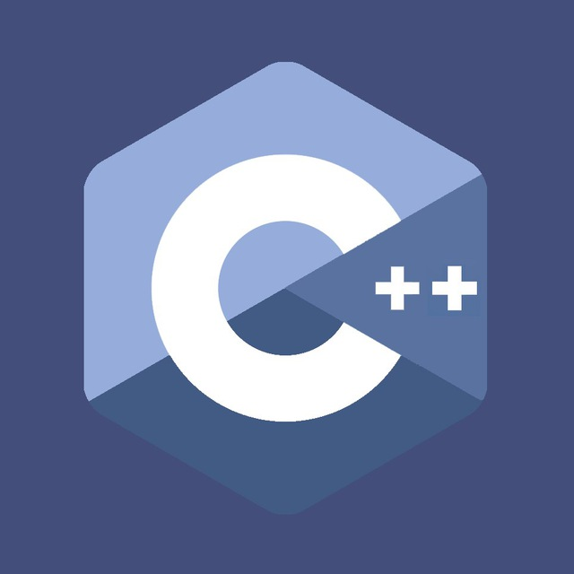

C++ (читается си-плюс-плюс) — компилируемый, статически типизированный язык программирования общего назначения.
Поддерживает такие парадигмы программирования, как процедурное программирование, объектно-ориентированное программирование, обобщённое программирование.
Язык имеет богатую стандартную библиотеку, которая включает в себя распространённые контейнеры и алгоритмы, ввод-вывод, регулярные выражения, поддержку многопоточности
и другие возможности. C++ сочетает свойства как высокоуровневых, так и низкоуровневых языков. В сравнении с его предшественником — языком C, — наибольшее
внимание уделено поддержке объектно-ориентированного и обобщённого программирования.
C++ широко используется для разработки программного обеспечения, являясь одним из самых популярных языков программирования. Область его применения включает
создание операционных систем, разнообразных прикладных программ, драйверов устройств, приложений для встраиваемых систем, высокопроизводительных серверов, а также игр.
Существует множество реализаций языка C++, как бесплатных, так и коммерческих и для различных платформ. Например, на платформе x86 это GCC, Visual C++, Intel C++ Compiler,
Embarcadero (Borland) C++ Builder и другие. C++ оказал огромное влияние на другие языки программирования, в первую очередь на Java и C#.
Синтаксис C++ унаследован от языка C. Одним из принципов разработки было сохранение совместимости с C. Тем не менее, C++ не является в строгом смысле надмножеством C;
множество программ, которые могут одинаково успешно транслироваться как компиляторами C, так и компиляторами C++, довольно велико, но не включает все возможные программы на C.